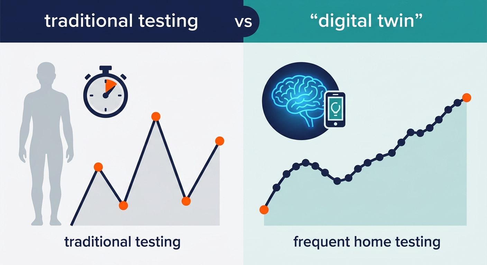

The Digital Twin of Memory: How an 8-Minute Home Test Could Revolutionize Longevity Trials

Imagine trying to track the retreat of a mountain glacier by visiting it once every two years, taking a single polaroid, and trying to guess the rate of melt. This is, quite literally, how we currently track the slow, devastating creep of cognitive decline. Patients sit in clinical, sterile rooms, anxiously reciting lists of words to a neurologist. It is a snapshot process that is stressful, infrequent, and plagued by the "practice effect"—where patients score better simply because they remember the test, masking their actual decline. For longevity medicine, which desperately needs high-resolution data to prove that new therapies can preserve the aging brain, this analog status quo is a massive bottleneck.
Now, a cross-disciplinary team of scientists has built a digital time-lapse camera for the mind. Published in the preprint journal medRxiv, a new study demonstrates how an elegant, 8-minute weekly online test can construct a "digital twin" of an individual’s memory. Instead of relying on raw test scores, the researchers used a computational phenotyping approach. They fed the raw data of weekly performance into a mathematical model of memory consolidation and forgetting, isolating a pure, individualized metric of cognitive health called the Seattle-Groningen Memory Assessment (SGMA) score. By modeling the brain’s natural rate of forgetting, the system successfully stripped away the confounding noise of practice effects, which amounted to a negligible 0.2% increase per test.
The study tracked 51 older individuals—including 24 diagnosed with amnestic mild cognitive impairment (aMCI) and 27 healthy controls—weekly for up to an entire year. The results were striking. The computational SGMA score was highly stable and reliable, showing a robust consistency across tests. Most importantly, this remote, un-supervised test was able to distinguish individuals with mild cognitive impairment from healthy age-matched peers with an impressive 87% accuracy. By turning cognitive testing into an adaptive digital biomarker, the researchers proved that high-frequency, remote cognitive tracking is not just possible, but highly precise.
For the longevity industry, this is a paradigm shift. As we transition from treating disease to extending healthy lifespan, clinical trials require biomarkers that can detect incredibly subtle changes over time. Imagine running a clinical trial for a drug designed to slow brain aging; rather than waiting years for a patient to deteriorate enough to fail a crude, annual pen-and-paper test, researchers can now deploy the SGMA. They can watch, in near-real-time and from the comfort of the patients' homes, whether the therapeutic flattens the trajectory of memory decay. It democratizes and scales decentralized clinical trials, slashing costs and accelerating the path of cognitive rejuvenators to the market.
However, before we celebrate the end of classical neuropsychological testing, we must look at this breakthrough with a critical eye. The study’s sample size is incredibly small—just 51 participants—and largely homogeneous. How well will this digital platform hold up when deployed across thousands of diverse patients with varying degrees of computer literacy, unreliable internet connections, or differing sleep patterns? Furthermore, while an 87% diagnostic accuracy is commendable, we still do not know how tightly these computational memory shifts map to physical pathology, such as the accumulation of amyloid-beta plaques or tau tangles in the brain. The road to clinical validation and FDA approval for digital biomarkers is notoriously long, and proving that an online game truly reflects neurodegenerative disease progression will require years of larger, multi-ethnic trials paired with biomarker imaging.
Sources & Citations:
Primary Source: Detection and Continuous Monitoring of Memory Dysfunction in Mild Cognitive Impairment and Healthy Aging Through Adaptive Computational Phenotyping (medRxiv)
-
['
- Steinka-Frye, A., et al. (2024). Detection and Continuous Monitoring of Memory Dysfunction in Mild Cognitive Impairment and Healthy Aging Through Adaptive Computational Phenotyping. medRxiv. doi: https://doi.org/10.1101/2024.03.15.24304345 ']